STEP BY STEP, WELL KEPT.
上手教程。
七个小节，从一条链接到一位老朋友。所有截图都来自真实界面，跟着做即可。
安装与首次启动
约一分钟，装完即用。全程本地运行：无账号、无捆绑。
1下载并安装桌面端
回到首页下载或 GitHub Releases，拿 x64-setup.exe 双击安装（中英双语，随附 yt-dlp，YouTube 开箱即用）。macOS 未签名，首次启动需右键 → 打开。
2认识你的收藏室
首次打开是一张空的收藏桌：上方粘贴链接即可收藏；右侧「传输现场」实时汇总速度与类型索引。新版本以后会自动送达，无需手动升级。
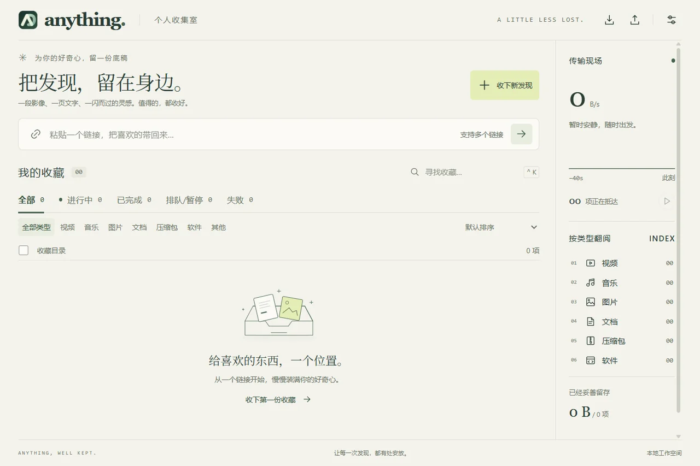
收下第一个链接
直链、批量链接都从输入框进；识别先行，心里有底。
1粘贴链接，先「识别」
把链接粘进首页输入框按 →，或点「收下新发现」打开新建任务（也可按 Ctrl+N，一次可贴多行）。点「识别」先看文件名、大小与类型；「更多选项」里可加校验值与镜像。
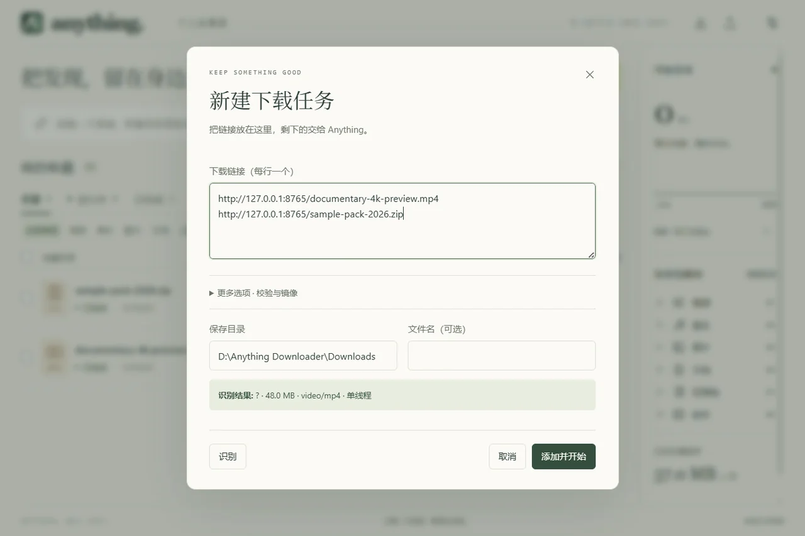
2添加并开始
点「添加并开始」任务立即入列：进度、速度逐行实时刷新，右侧传输现场汇总总速度与 40 秒曲线。一次贴多行就是批量收藏。
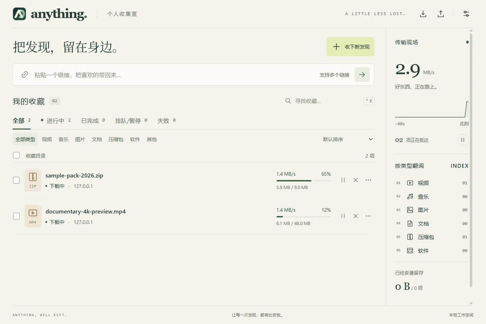
管理你的收藏
状态筛选、搜索、排序都在列表上方；行内即操作，双击看详情。
1双击看详情
双击任意一行打开详情抽屉：状态、重命名、优先级、链接与目录一目了然，失败原因也在这里分类展示。
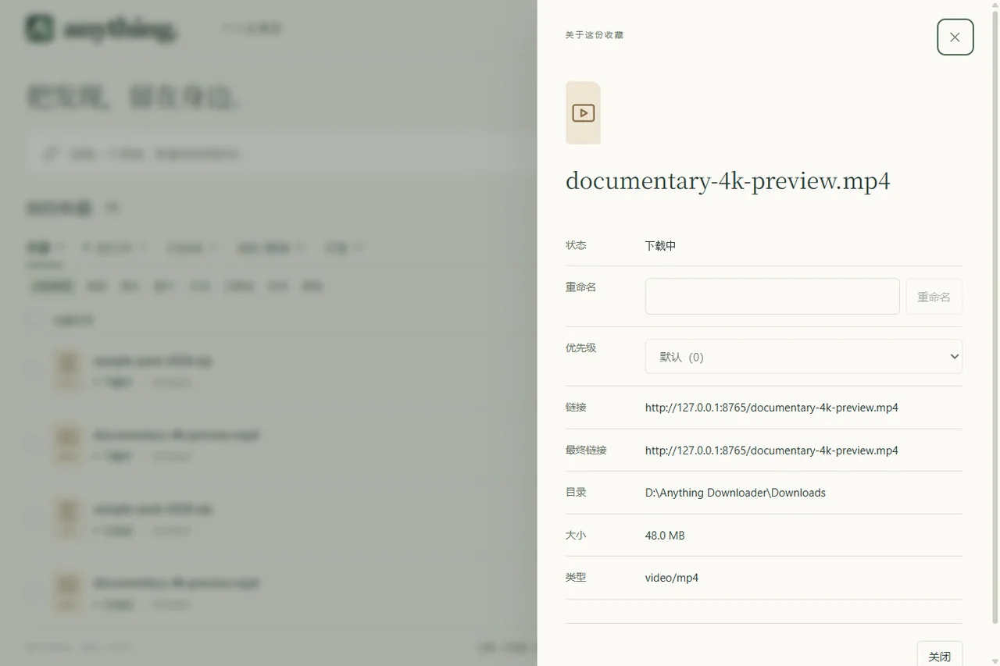
2批量接管
勾选多行（支持 Shift 范围选择）即出批量操作栏：开始、暂停、重试、取消、删除一次到位。
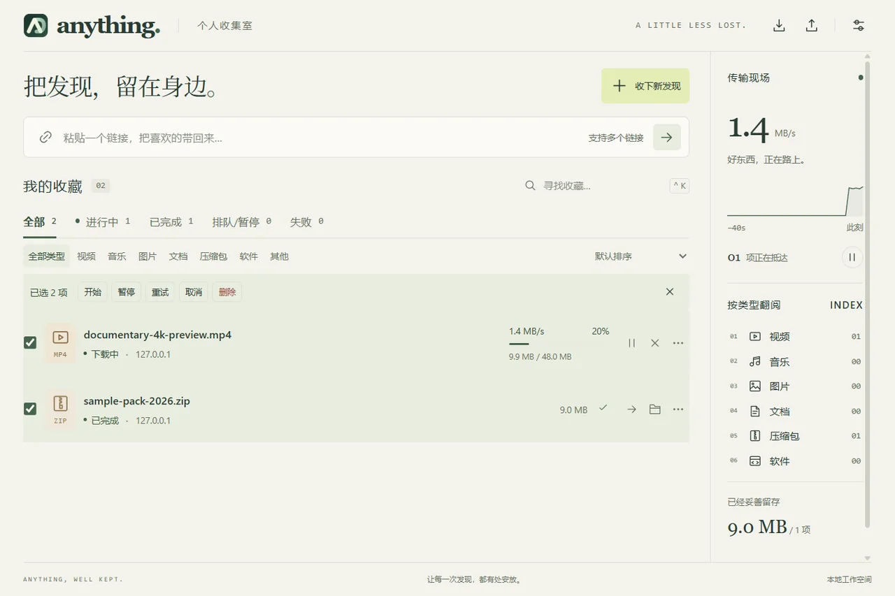
3完成的收藏，妥善留存
「已完成」页签按类型归档全部收藏，行内可打开文件或所在文件夹，也可以清空记录。
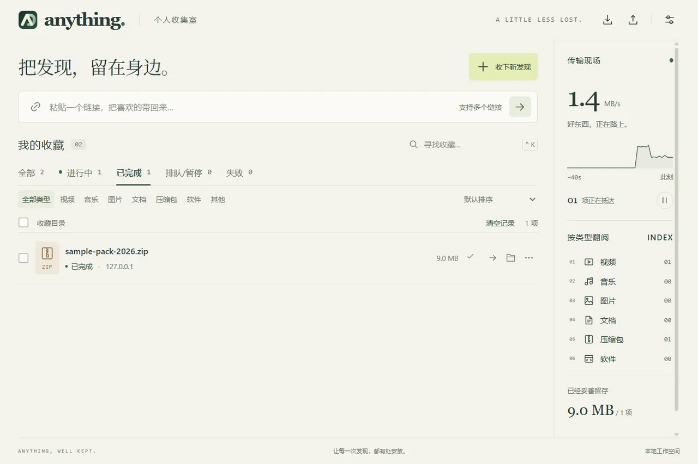
按习惯调校
右上角齿轮打开设置，改完即存。
1存放与传输偏好
「01 / 存放与命名」：默认保存目录、单任务分段数（1-32）、文件冲突策略；「02 / 传输偏好」：单任务与全局限速（字节/秒）、最大并发任务数、失败自动重试次数。卡顿或抢带宽，都在这里调。
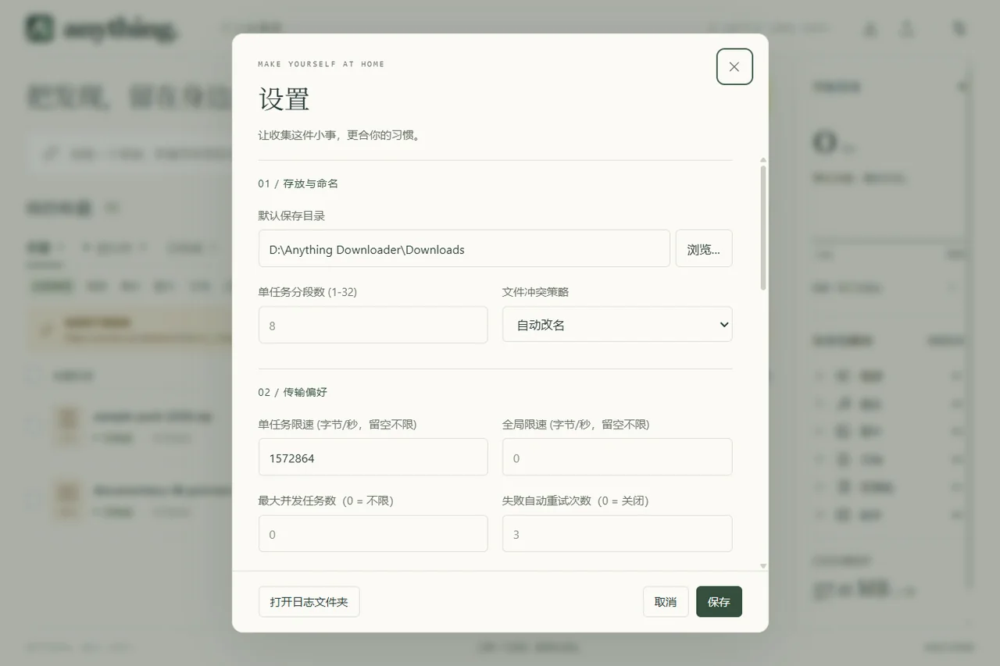
手机远程添加
躺在床上刷到好东西，扫码推给桌面收。
1开启「远程添加」，手机扫码
设置 → 勾选「远程添加（手机扫码推链接）」即出现二维码。手机浏览器扫码（或输入地址）打开推送页，把链接发过来，桌面端立即建任务。配对令牌仅限局域网使用。
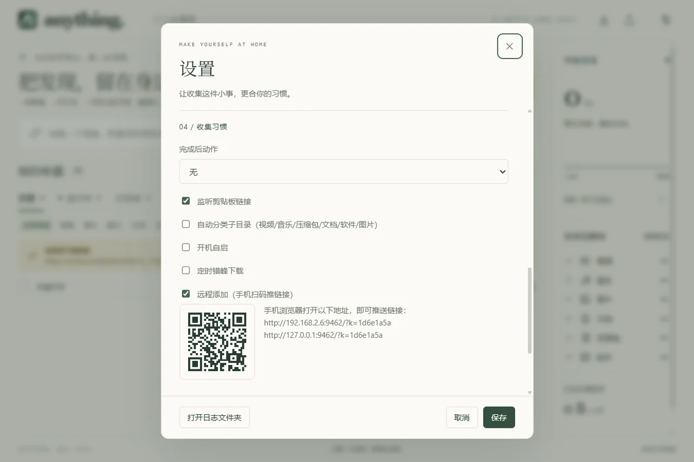
安装浏览器扩展
浏览时顺手收下好东西——Chrome / Edge 均可，全程约 2 分钟。
1在桌面端打开安装指引
设置 → 「浏览器扩展通道」一行点「安装浏览器扩展」：扩展文件已随桌面端装进软件目录，弹窗给出四步指引与文件夹实际位置，可一键「打开文件夹」「复制路径」。
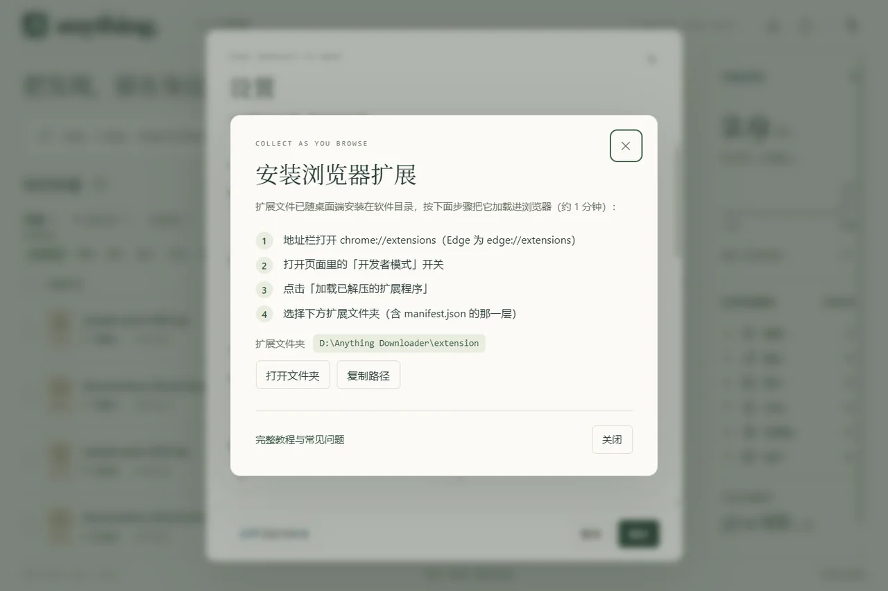
2浏览器里加载扩展
地址栏打开 chrome://extensions（Edge 为 edge://extensions）→ 打开「开发人员模式」开关 → 点「加载已解压的扩展程序」→ 选中弹窗给出的扩展文件夹（含 manifest.json 的那层）。加载后列表出现 Anything Downloader。
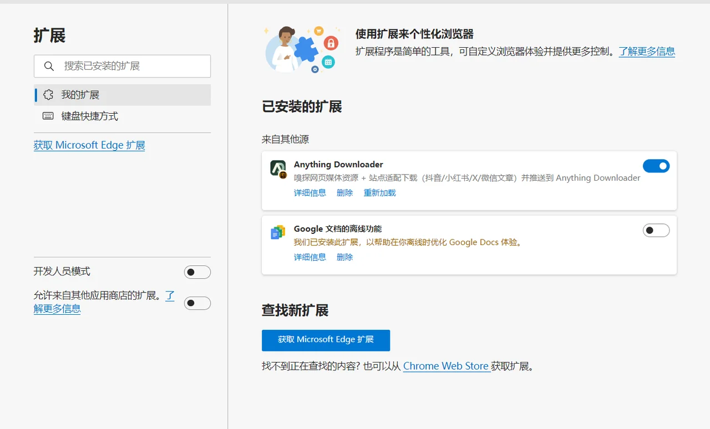
3验证：popup 显示「已连接」
点工具栏 Anything 图标：右上角亮起「已连接」即扩展已与桌面端握手。「本页发现」列出当前页面嗅探到的媒体与直链，点推送即收藏。
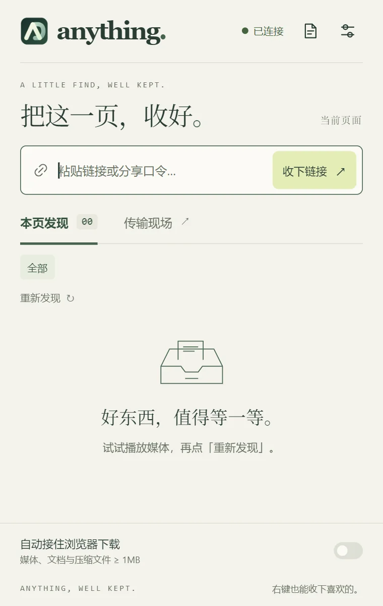
4传输现场随身看
popup 切到「传输现场」：桌面端任务实时进度、完成即可「打开」；网页里右键图片 / 链接 / 视频也能一键推送，还可开启「自动接住浏览器下载」。
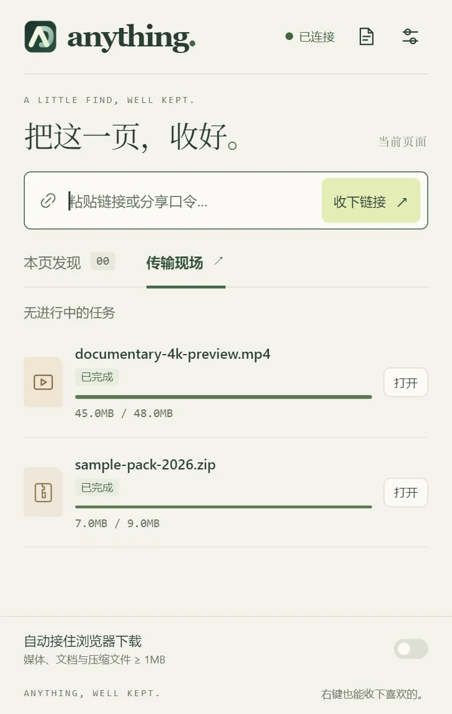
权限说明、常见问题与卸载方法见 扩展安装完整文档 →
保持最新
更新包经 minisign 验签、后台静默安装，重启即升级。
1自动更新（默认开启）
运行中每 6 小时静默检查一次，发现新版本自动后台下载：右上角设置图标出现小圆点，悬停可见进度；下载完成后打开设置 → 「05 / 关于与更新」点「立即重启」生效——重启时机永远由你决定。
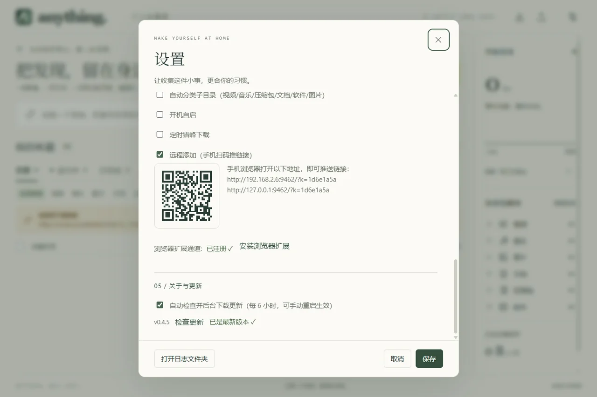
2手动检查
同一区块点「检查更新」即可随时手动查；想关掉自动下载，取消勾选「自动检查并后台下载更新」即可（仍可手动检查与下载）。
收好每一个发现。还没安装？回到下载页 →